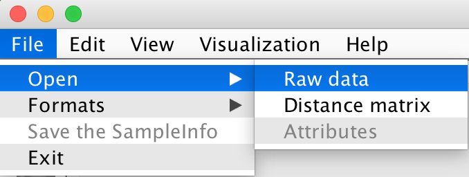
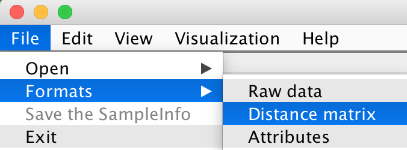

| Latest Version .jar File | View on GitHub |
Get ACES |
ACES is a machine learning toolbox for clustering analysis and visualization of both biological data and other types data. Given the biological data or their distance/probability matrix, ACES can automatically extract the features of each identity and cluster them by various widely used clustering algorithms. To facilitate the Hierarchical and k-means Clustering, the candidate centroids of clusters are first estimated by a novel distances and standard deviation based algorithm. To visualize the original data or distance matrix, Principle Component Analysis is used to reduce the dimensionality and extract three significant components for plotting them into 3D space. ACES also provides the interface for clustering analysis and visualization together with the attributes or sample information of each identi.ty. It is clear to show which attributes contribute to the clustering results.
Step 1: Get the latest version of ACES, together with some data for testing, from here. To run ACES just double-click on the latest ACES.jar file.
Step 2: Check the format of files. Original Data, Distance Matrix, Data Attributes
Step 3: Start your ACES journey.
Check the recommended format
Open a file
Check the recommended format
Open a file or files
Get the number of Clusters
Show Hierarchical clustering results
Show K-means clustering results
Show DBSCAN clustering results
Check the recommended format
Open a SampleInfo file
Show all the Attributes in the SampleInfo file
Select an Attribute to plot
Add Clusters Info to the SampleInfo file
Save the SampleInfo
Plot samples with clustering results
Plot samples with the selected attribute
Heat map of the samples
Heat map of the samples with clustering results
Heat map of the samples with the selected attribute
There are two choices to format your sample data file: Sample Data -> Format
Format 1: The Label ID is shown in the one of columns. The data vector of each sample is distributed by rows.
Format 2: The Label ID is shown in the one of rows. The data vector of each sample is distributed by columns.


Sample Data -> Load

There are three choices to format your distance matrix file: Distance Matrix -> Distance Matrix Format
Format 1: Name + Label_ID + Data
Format 2: Label_ID + Data
Format 3: Data

Distance Matrix -> Load

Here we define the "Distance Matrix" as "Cactus".
If the file contains many cacti, please select one of the cacti to analyse.

If you want to choose the other cactus to compare or analyse: Distance Matrix -> Choose the Cacti
The current cactus is shown in the menu.

Clustering -> Number of clusters
Clustering -> Hierarichical Clustering Results
The number of clusters has been estimated automatically so that the user doesn't need to set the parameters.
The clustering results will be shown on the screen.
Clustering -> Kmeans Clustering Results
The number of clusters and the centroids have been estimated automatically so that the user doesn't need to set the those parameters.
The clustering results will be shown on the screen.
Clustering -> DBSCAN Clustering Results
The scan radius and minimum number of samples have been estimated automatically and provided on the dialog below. However, it is best to use your own parameters as this clustering algorithm aims at clustering samples by density and it is hard to estimate them automatically only on the basis of the data.

The clustering results will be shown on the screen.
The samples can be visualized in the 3D space by the PCA plot. Each sample is coloured by its clustering result. Visualization -> Plot Samples with Clustering Results

As the figure shown below, all the samples are coloured by the clustering results. PCA clearly categorizes all the samples into two groups and the clustering results are also clearly shown on this plot. Blue samples and red samples are two groups.
The number of clusters/groups are automatically calculated by ACES, however, the cluster results might be varying by different clustering algorithm selected by user. Therefore, the colour info shown in the PCA plot might be varying.
The Label IDs are shown on the right. Both the points on the left plot and IDs on the right can be selected. As shown in the figure, the top point/sample is selected and its ID is immediately shown in the legend.
The distance matrix, which demonstrates the relationship between each two samples pair, can be visualized by the Heat map. Visualization -> Heat Map -> Original Distance Matrix

The samples can be visualized in the 3D space by the PCA plot. Each sample is coloured by its clustering result. Visualization -> Heat Map -> After Clustering

The distance matrix has been reordered by the clustering results.
Attributes -> Attribute Format


Attributes -> Load
According to your Distance Matrix, ACES will automatically check whether your input SampleInfo file is correct and then remind you to sort your SampleInfo file.
To sort the SampleInfo file, the SampleInfo Labels should be choosen first.

Then, ACES will remind you to reformat the SampleInfo or Distance Matrix labels.

To make them consistent, you can simply change the Distance Matrix labels.
Or, change both types of labels.

The new labels will be shown on the screen.
Attributes -> Show All Attributes
Attributes -> Select an attribute to Plot

For example, the Gender is selected.
The clustering results can be added to the SampleInfo file. Attributes -> Add Clusters Info to the SampleInfo file
The user can save the sorted SampleInfo file. Attributes -> Save the SampleInfo


Visualization -> Plot Samples with the Selected Attribute


The selected attribute info are shown on the bottom of heat map using the same colour shown in the PCA plot. Visualization -> Heat Map -> Clustering Results with the Selected Attribute